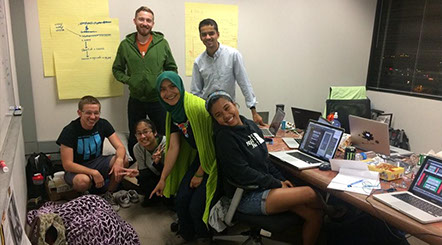

Swiss People Love The Vampire Diaries
Back in 2012, Justin Key lived and worked in Zürich, Switzerland as a financial services consultant and professional alphorn player.
Okay, that second part isn't true –– though we all wish it was.
After each week of consulting at PwC Switzerland, Justin and his wife would invite a handful of their Swiss friends over for a home-cooked American dinner to celebrate the start of a new weekend. Afterward, they'd all gather around the couch, pour some wine, and watch TV –– Justin's Swiss friends loved all sorts American titles, from The Vampire Diaries to Game of Thrones.
In Justin's own words:
"So you're around the TV, the popcorn is popping, the wine is being poured, and everybody is talking about what's going to happen next in the show, or what happened last episode. And so these sorts of discussions just sort of organically arose during our time watching TV together."
Now if you've ever watched Netflix with friends before, that's something you can relate to. The discussions and predictions you share about a show's events and characters are half the fun. And that's why Justin's wife Lindsey suggested: "What if we made a game out of this?"
So, like a true financial consultant, Justin put together an Excel spreadsheet to keep track of everyone's predictions . He also added in a scoring algorithm to rank each player.
This simple game then grew into a business plan. After all, there's a real need here: people have the desire to experience their favorite shows socially. With streaming services becoming increasingly popular each year, it has never been easier to watch TV with friends. Yet nobody has attempted to integrate these shared social experiences with the tech we all carry in our pockets.
With this in mind, Justin pitched his idea at the Texas Venture Labs competition after flying into Austin from Switzerland. This was Plot Guru's first real test, and it succeeded –– pushing through the semi-finals, the finals, and eventually into first place. It was also during this time that Justin learned of his acceptance into the Texas MBA program at the University of Texas at Austin.
Later that year, Justin attended 3 Day Startup Austin, an , an intense accelerator program designed to bring promising young entrepreneurs together to build and pitch a tech startup in only 72 hours. Hosted at the Austin Technology Incubator, this is where Justin met the rest of the future Plot Guru team.
This was the turning point –– Plot Guru wasn't just an idea anymore. It was being actively developed by a dedicated team: Ethan Dirks on design, Vivian Hu on UX, Justin Jia and Maxim on front end development, and Da on the back end.
Yes, we have two Justins.
Right now, Plot Guru is functional and ready to download on the App Store. We’re writing questions (literally) by the thousands, developing several exciting features, and are actively recruiting new team members. We’re excited to see where this growth takes us!